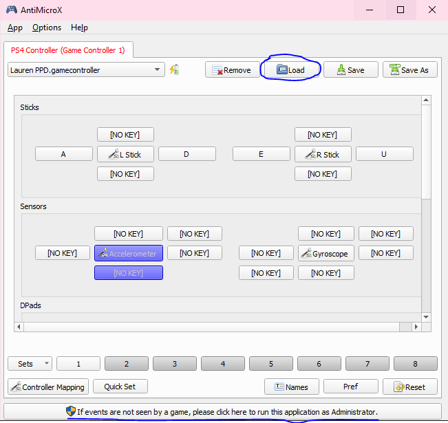

Warning! You still need to run the PPD installer first before downloading this preinstalled version to get the fonts and other necessary programs. See the 'Downloading PPD' section of this guide for a tutorial on how to run the PPD Installer. Once you have ran the installer and downloaded this preinstalled version, paste the preinstalled version into the fresh PPD installation and overwrite everything. If it gives you an error about version mismatch, paste this file into the main folder.
Downloading this preinstalled version of PPD is currently the simplest way of jumping straight into the game. Click here to download.
Note that you will still have to set up a controller if you wish to play with one. See the controller setup guide for a tutorial on that.
The EXODUS skin is a fanmade menu skin mod that will make your game look better than the base version of PPD. If you'd like to choose a different menu skin, browse and download them here. For a tutorial on applying menu skins, click here.
This installation includes all of the necessary quality of life mods to make your gameplay experience more enjoyable. Be sure to activate them in-game by opening the menu (press square), navigate to the "Mods" section, and activate the mods you want to use with the circle button.
Be sure to get some songs to play as well! Have fun!
1. Open the official PPD website.
2. Click the "download" tab near the top left.

*You do not need a PPD account to play the game; however, you must have an account to save scores, upload custom charts, and have a profile picture + name during multiplayer.
3. Click the blue "PPD Installer (64bit)" button. This will download the PPDInstaller to your PC.

4. Extract and open the PPDInstaller folder, and start the application.

Select your language and download options.
Upon running the PPDInstaller, PPD will be located in the "KHC" folder.

Circled in red is the game itself. Click this to run the game.
You have now downloaded PPD!
PPD can be played with a keyboard or a variety of controllers (typically a DS4).
Before connecting a controller, be sure to complete the following steps first with a keyboard.
This guide will help you install a base version of PPD. To make the game look more like official Project Diva games, we will install mods later in this guide. For now, follow along:
1. Starting the PPD application for the first time will trigger an update. After this update is completed, you'll be met with this box:

If you made an account beforehand, go ahead and enter your account info. If not, hit cancel and the game will start normally.
2. You'll be met with this screen and will need to navigate with the mouse initially:

Click the arrow pointing to the right on the screen to progress. Continue to navigate until you arrive at the in-game inputs screen (Assign Key/Button).

Use the "Change" buttons to change the desired key/button bindings to whatever you like. These are our recommended controls. On keyboard, it is recommended to change the Home button to a more uncommon/unused key.
3. Once you are done, you will arrive at this screen. Use your new L and R buttons to navigate the menus.

From here, you can play with a keyboard if you wish.
Just be sure to add some songs to play first!
Press the key your circle button is binded to to confirm and start single-player or multiplayer mode.
To play with a controller, close PPD and continue with the controller setup guide.
WARNING! Be sure you have done everything in the Opening PPD For The First Time guide before proceeding.
There are various ways to set up a controller for PPD. This megathread will start by showing you our preferred method: downloading and configuring AntiMicroX with a DS4 controller (AKA: a PS4 controller).
This preferred method will allow you to optimize your controller inputs (use sticks, left d-pad, right d-pad, square, circle, L1 and R1 buttons for sliders).
- Option 1: AntiMicroX with a DS4 Controller -
1. Click here to go to the github page for AntiMicroX. Scroll to the bottom where it says 'Assets,' then click to download the version that matches your computer's operating system. (For the most common Windows user, that would be 'antimicrox-3.5.1-Windows-AMD64.')

2. Once you have AntiMicroX downloaded, run the .exe as Administrator (hover over the AntiMicroX app icon, right-click, then click 'Run as Administrator.').
3. Click here to download the amazing awesome PPD Discord server owners' (and one of the creators of this websites') controls. Yes, it'll look like a bunch of code, but just press the 'Download' button at the top right and download it.

4. On AntiMicroX, press the 'load' button, then select the controls config you just downloaded. This will load up the correct controls automatically!
5. Play PPD with AntiMicroX running at the same time. You may need to navigate to the Assign Key/Button screen in PPD again and map the controls you're using on your controller. To do this, click the 'change' buttons on each section and then click the corresponding button on your controller.
Making an account is not necessary if you only want to play the game and not use account features (saving scores, uploading custom charts, having a profile picture + name during multiplayer, etc.)
1. Click the "sign up" tab at the top right corner of the official PPD website.
We highly recommend specifically clicking this "sign up" tab in the top right corner. The blue button has been known to not work.

2. Enter a valid e-mail address and click "Register."

Things to be mindful of when making an account:
1. No username that's already be used.
2. No E-Mail address that's already been used/deactivated.
3. No symbols in the password (only alphanumeric + capitalization allowed)
You have now made a PPD account!
This guide was originally written by Marathon (marathonguy). Thank you, Marathon!